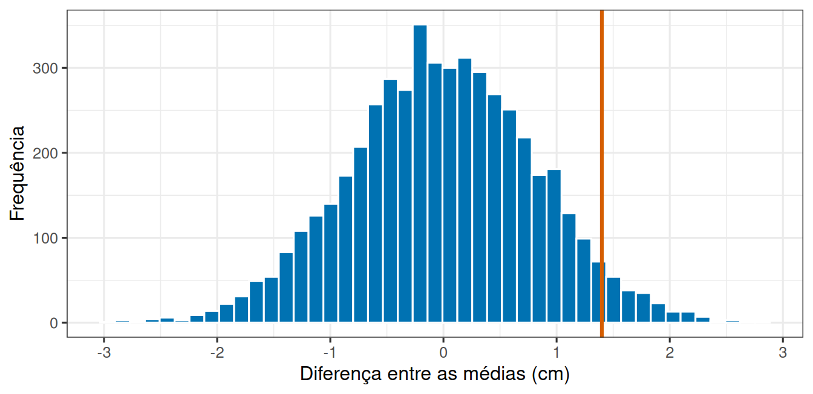
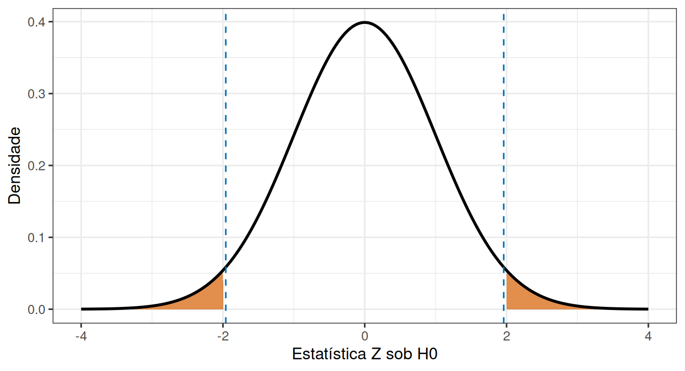

Um experimento compara dois substratos para o assentamento de larvas de mexilhão. Doze placas recebem o substrato A e doze recebem o substrato B, sorteadas. Ao fim, mede-se o comprimento médio dos indivíduos em cada placa.
O substrato A produziu 10,2 cm e o substrato B produziu 11,6 cm, uma diferença de 1,4 cm.
Parece um efeito. Mas antes de anunciá-lo, vale lembrar de onde viemos, porque duas amostras da mesma população já teriam médias diferentes. Então a pergunta correta não é “houve diferença?”. Houve, sempre há. A pergunta é:
Uma diferença desse tamanho apareceria com frequência mesmo que os dois substratos fossem idênticos?
2 Construindo um mundo sem efeito
Para responder, precisamos saber como seriam os resultados se o substrato não fizesse diferença nenhuma. Esse cenário tem um nome, hipótese nula.
A hipótese nula não é uma opinião sobre o mundo. É um processo gerador de dados, uma receita que podemos escrever e executar no computador:
sorteie 12 placas com média 10,2 e desvio-padrão 2, sorteie outras 12 com a mesma média e o mesmo desvio-padrão, e calcule a diferença entre as médias.
Rodando essa receita uma vez, obtemos uma diferença. Rodando 5000 vezes, obtemos o conjunto de diferenças que o acaso sozinho é capaz de produzir. É exatamente isso que o código abaixo faz, e vale acompanhá-lo linha a linha, porque ele é a tradução literal da receita.
Ver a geração da distribuição nula e do valor de p
diferencas <-replicate(5000, mean(rnorm(12, 10.2, 2)) -mean(rnorm(12, 10.2, 2)))valor_p <-mean(abs(diferencas) >=1.4)ggplot(tibble(d = diferencas), aes(x = d)) +geom_histogram(bins =45, fill ="#0072B2", colour ="white") +geom_vline(xintercept =1.4, colour ="#D55E00", linewidth =1.1) +labs(x ="Diferença entre as médias (cm)", y ="Frequência")

Figura 1: Cinco mil diferenças entre médias de dois grupos gerados pelo mesmo processo. A linha marca a diferença de 1,4 cm observada no experimento.
O histograma da Figura 1 está centrado em zero, como esperado, porque dois grupos idênticos não diferem em média. Mas ele é largo. Diferenças de 1 cm, de 2 cm e até maiores acontecem com alguma frequência, sem que exista qualquer efeito.
A diferença observada, 1,4 cm, cai numa região onde o acaso ainda produz resultados com certa regularidade.
2.1 O processo nulo precisa respeitar o experimento
A receita acima não é a única possível, e escrever a receita errada invalida tudo o que vem depois. No exemplo, cada placa é independente e os dois grupos têm o mesmo desvio-padrão no gerador. Se o tratamento tivesse sido aplicado a tanques com várias placas dentro, simular placas independentes seria um modelo nulo errado. O processo precisa reproduzir número de unidades experimentais, agrupamento, alocação, variabilidade e estatística usada na análise.
Convém notar que nem toda hipótese fixa tudo o que é preciso simular. Há hipóteses simples, que determinam completamente um parâmetro, e hipóteses compostas, que reúnem vários valores. A hipótese \(H_0:\mu_A-\mu_B=0\) fixa a diferença, mas deixa desconhecidas médias e variâncias que precisam ser estimadas. Um teste clássico produz sua distribuição nula levando essa estimação em conta, e uma simulação precisa fazer o mesmo de forma coerente.
3 O valor de p
Agora podemos transformar essa leitura visual em um número, a proporção das diferenças simuladas que é tão extrema quanto a observada.
No caso, cerca de 9% das simulações produziram uma diferença de 1,4 cm ou mais, para mais ou para menos, num mundo sem efeito nenhum. Essa proporção é o valor de p.
NotaO que o valor de p responde
O valor de p é a probabilidade de observar um resultado tão ou mais extremo que o obtido, supondo que a hipótese nula seja verdadeira.
Ele parte do modelo sem efeito e olha para os dados.
AvisoO que o valor de p não responde
Ele não é a probabilidade de a hipótese nula ser verdadeira. E não é a probabilidade de o resultado ter sido “sorte”.
Trocar essas duas leituras é o erro de interpretação mais frequente em toda a estatística aplicada.
3.1 Uma ou duas caudas
A definição fala em resultados “tão ou mais extremos”, e essa expressão esconde uma decisão. No teste bilateral, diferenças positivas e negativas contam como extremas, e é por isso que o código usa abs(). Um teste unilateral, como \(H_A:\mu_B>\mu_A\), conta apenas a cauda previamente especificada. Ele pode ter maior poder na direção escolhida, mas deixa de considerar a direção oposta como evidência contra \(H_0\).
A escolha precisa ocorrer antes de olhar os resultados e só é defensável quando a direção oposta não responderia à pergunta científica. Observar o sinal da diferença e então escolher uma cauda reduz artificialmente o valor de p.
Em um teste bilateral com nível \(\alpha\), a região de rejeição é dividida em \(\alpha/2\) em cada cauda. Em um unilateral, toda a área \(\alpha\) fica em uma cauda. Essa concentração reduz o valor crítico na direção prevista e aumenta o poder ali, mas torna resultados extremos no sentido oposto incapazes de rejeitar o teste tal como especificado.
4 Hipóteses, estatística e distribuição nula
Até aqui trabalhamos com uma receita e uma contagem. O vocabulário formal descreve as mesmas operações e é o que aparece nos artigos e nos programas de análise.
Uma hipótese estatística precisa ser escrita sobre parâmetros da população. Se \(\mu_A\) e \(\mu_B\) são os comprimentos médios sob os dois substratos, o teste bilateral usa
\(H_0\) fornece um valor de referência, enquanto \(H_A\) reúne diferenças em qualquer direção. A diferença entre médias é a estatística de teste escolhida para medir a discrepância entre dados e hipótese. Sua distribuição quando \(H_0\) é verdadeira é a distribuição nula, isto é, precisamente o histograma da Figura 1.
Uma estatística útil aumenta quando os dados se afastam de \(H_0\). Em testes clássicos, costuma ser padronizada pela própria incerteza:
\[
\text{estatística}=\frac{\text{estimativa}-\text{valor previsto por }H_0}
{\text{erro padrão da estimativa}}.
\]
Essa forma explica por que a mesma diferença pode ser comum em um estudo pequeno e extrema em um estudo preciso. O numerador mede o efeito observado, enquanto o denominador mede o ruído esperado pelo desenho.
4.1 O atalho analítico: um teste Z
Um exemplo numérico torna a padronização concreta. Suponha, apenas para simplificar a conta, que uma população tenha desvio-padrão conhecido \(\sigma=2\) cm. Uma amostra de \(n=25\) placas apresenta média \(\bar x=10{,}8\) cm e queremos testar \(H_0:\mu=10\) cm. A estatística é
Aqui \(\mu_0\) é o valor previsto por \(H_0\) e \(\sigma_{\bar{x}}=\sigma/\sqrt n=0{,}4\) cm é o erro padrão da média. A leitura verbal é que a média observada ficou dois erros padrão acima do valor nulo. Em um teste bilateral, o valor de p é \(2P(Z\ge2)\approx0{,}0455\), que corresponde à área destacada nas duas caudas da Figura 2.

Figura 2: Distribuição normal padrão sob H0. Em laranja, resultados tão ou mais extremos que Z igual a 2 nas duas caudas. Linhas tracejadas marcam os limites de rejeição para alfa igual a 0,05.
As linhas tracejadas da Figura 2, em aproximadamente \(\pm1{,}96\), delimitam a região central que concentra 95% da distribuição nula. Como \(Z=2\) ficou fora dela, o resultado seria declarado incompatível com \(H_0\) ao nível de 5%. No cotidiano, \(\sigma\) é quase sempre desconhecido e a distribuição t substitui a normal. O exemplo Z é uma lente para compreender a padronização, não uma recomendação automática de teste.
5 Do valor de p à decisão
Calculado o valor de p, muitos contextos exigem uma decisão explícita. O nível de significância \(\alpha\) é o risco máximo de erro tipo I aceito antes da análise. Com \(\alpha=0,05\), usamos a regra:
se \(p\le\alpha\), rejeitamos \(H_0\);
se \(p>\alpha\), não rejeitamos \(H_0\).
Não rejeitar não significa aceitar ou provar \(H_0\). Significa apenas que a estatística observada não foi suficientemente incompatível com o modelo nulo, dada a precisão disponível. O valor de p é uma medida contínua de compatibilidade e não muda de natureza ao cruzar 0,05.
Situação calculada
Decisão formal
Formulação adequada
\(p\le\alpha\)
rejeitar \(H_0\)
dados pouco compatíveis com o modelo nulo
\(p>\alpha\)
não rejeitar \(H_0\)
evidência insuficiente para rejeitar o modelo nulo
Evite “aceitar \(H_0\)”, “provar \(H_A\)” e “não existe diferença”. Um teste pode deixar de rejeitar porque o efeito é realmente nulo, porque a amostra é pequena, porque a variabilidade é alta ou porque o modelo e a estatística são pouco sensíveis ao efeito existente.
O valor de p também não mede a magnitude ou a relevância do efeito. Uma diferença minúscula pode produzir valor de p pequeno em uma amostra enorme, e uma diferença biologicamente importante pode permanecer incerta em uma amostra pequena. Por isso estimativa, intervalo de confiança, unidade de medida e contexto devem acompanhar a decisão. Um relato informativo reúne diferença estimada, unidade, intervalo de confiança, estatística, graus de liberdade quando houver, valor de p e descrição do delineamento. A decisão binária é apenas uma parte dessa evidência.
AvisoA distribuição nula não é fixa
Ela não depende só do que se mede, mas também do experimento que foi montado.
Com menos placas por grupo, o acaso produz diferenças maiores com facilidade e a distribuição nula fica mais larga. Com mais placas, ela se estreita. A mesma diferença de 1,4 cm pode ser banal em um experimento e rara em outro.
6 Uma receita que serve para qualquer comparação
Vale reparar no que foi feito aqui, porque o procedimento se repete em praticamente toda a estatística aplicada. Escrevemos o cenário sem efeito como um processo gerador de dados. Executamos esse processo muitas vezes. Olhamos onde o resultado observado cai dentro do que o acaso produz. Contamos.
Nenhuma fórmula apareceu nas três primeiras etapas, e nenhuma foi necessária. As fórmulas dos testes clássicos existem porque, antes dos computadores, simular cinco mil experimentos era impossível. Elas chegam ao mesmo lugar por um atalho matemático, e é por isso que o teste Z da seção anterior e o histograma simulado respondem à mesma pergunta.
Essa é a razão pela qual vale a pena entender o modelo nulo como uma receita, e não como uma tabela de valores críticos. Diante de um delineamento novo, para o qual nenhuma fórmula pronta se aplica, ainda é possível escrever o processo que geraria os dados na ausência de efeito, executá-lo e contar. A diferença de 1,4 cm do início não ganhou nem perdeu importância nesta leitura. Ela apenas passou a ser lida contra o que o acaso, naquele experimento específico, é capaz de produzir sozinho.
Teorema de Bayes (MEAD), que formaliza por que \(P(\text{dados}\mid H_0)\) e \(P(H_0\mid \text{dados})\) são quantidades diferentes.
DicaPara pensar
Uma simulação de 5000 repetições devolve 40 resultados tão extremos quanto o observado. Qual é o valor de p, e como você o descreveria em uma frase para quem não estudou estatística?
Se a hipótese nula é uma receita que escrevemos, o que aconteceria com o valor de p caso escolhêssemos um desvio-padrão maior ao escrevê-la?